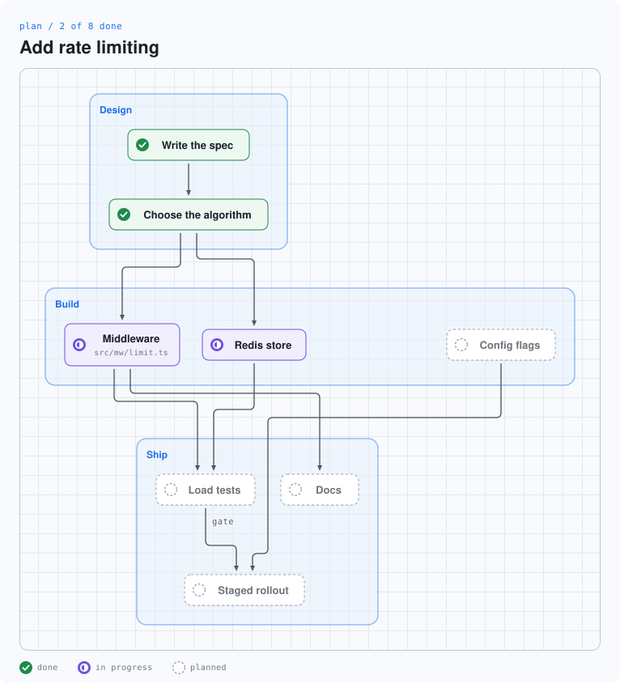
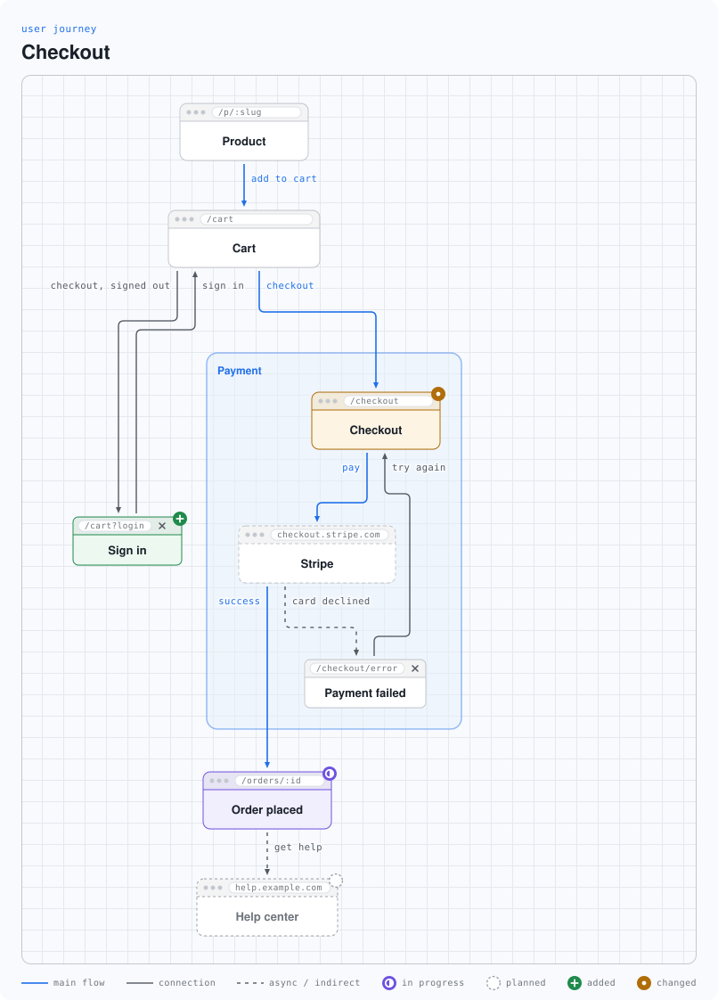
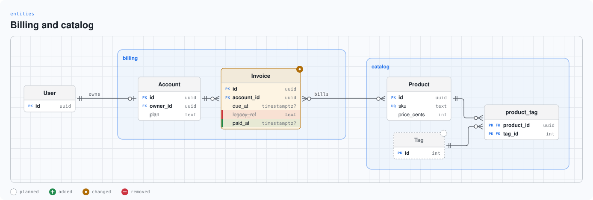

Diagrams of software that an agent draws in seconds.
Ask your agent to show what it built, what it is building, or what it plans. It writes a few lines of text, and swe-diagrams turns them into a diagram. Each part can show a status: done, in progress, planned, added, changed, or removed.
Install in one step. Paste this into Claude Code, Codex, Cursor, or another coding agent. It installs the program and the skill, and draws a test diagram.
Show me howHow to get it
Pick one way. Each gives you the swe-diagrams program. The agent skill tells your agent when and how to use it.
Give it to your agent
Paste this into your coding agent. It follows the install steps and draws a test diagram.
Plugin
Gives Claude Code the skill. It also needs the program: use one of the next ways.
Install script
Puts the program in ~/.local/bin and the skill in ~/.claude/skills.
npm
A small launcher. The first run downloads the release binary and checks it against SHA256SUMS.
Cargo
Builds the program from crates.io. Then copy skills/swe-diagrams into the skills folder of your agent.
Prebuilt binaries
Each release has binaries for macOS, Linux, and Windows, and a SHA256SUMS file.
Then ask your agent: “Draw the architecture of this repo.” or “Make a plan diagram for this change, and update it as you work.”
What it draws
Every picture comes from a few lines of text. The program places everything, so the agent never looks at the picture to fix it. One diagram takes about 3 milliseconds. Pictures follow your light or dark setting.






Twelve types in all: architecture, sequence, plan, dependencies, flow, state, data flow, change map, entities, classes, timeline, and journey. Output goes to SVG, an interactive HTML page, PNG, GIF, MP4, and terminal text. A node can open a detail level, and a story can play the motion of a request.